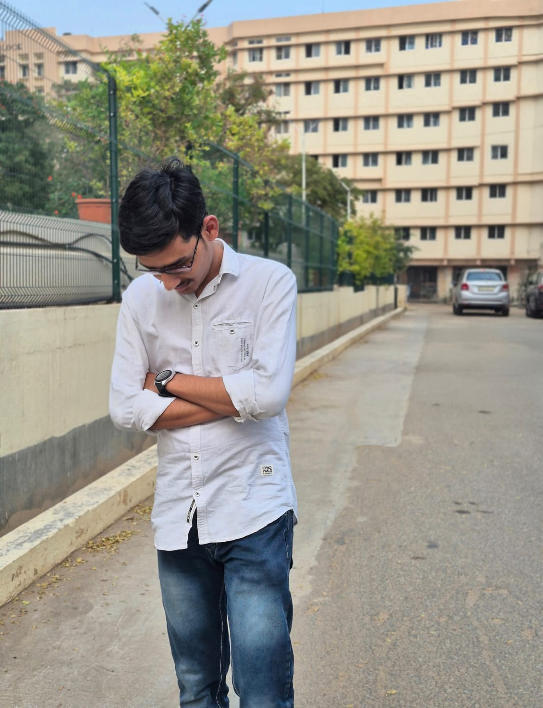

ABOUT ME

About Me
Hey! I'm Aditya Pratap Singh Jadon, a third-year B.Tech student with a strong interest in
technology, creativity, and continuous learning. I enjoy exploring web development and experimenting
with different designs and ideas to improve my skills step by step. For me, coding is not just about
writing programs but also about creating something meaningful and visually engaging.
Apart from academics, I like spending time learning about new technologies, customizing user
interfaces, and working on small personal projects that help me gain practical experience. I also
enjoy photography, music, gaming, and exploring peaceful places with friends after long hectic
schedules. I believe in learning through consistency, curiosity, and real-world practice, and I
always try to improve myself with every project I work on.